Volumetric Rendering
Overview
Over the course of the last six months I have been working on my master's thesis to finish my M.Sc. in computer science at the Technical University Munich. The thesis was about creating a unified particle rendering pipeline for games using volumetric rendering. My supervisor was Prof. Dr. Rüdiger Westermann from the computer graphics chair at TUM. In addition I had the opportunity to have Dr. Matthäus Chajdas from AMD and Dr. Sébastien Hillaire from Frostbite as my advisors.
State of the Art
Modern games consist of a variety of different particle effects. These can include large scale analytic fog, medium scale light shaft effects or small scale 2D billboards. All these effects have to be implemented separately and combined together in the final image. To decrease this problem volumetric rendering with raymarching is started to be used in most major engines. The current state of the art approach which Sébastien has created can be already used for great visuals.
You can find more information on it in this presentation. The great results which can be achieved with this technique can be seen in some of the new Frostbite games like Anthem.
This approach has several advantages:
- The view space grid maps directly to the raymarching steps
- Low resolution raymarching can be used thanks to temporal integration
- Low memory footprint of the grid
- Supports large and medium scale effects
- Can be applied easily to opaque and transparent geometry
However there are also clear disadvantages:
- The grid has to be filled completely each frame
- Different volumetric volumes at the same position invalidate each other
- Relatively coarse resolution of the grid, reduces support for small particles
- Additionally world space grid is needed for volumetric shadows
- Still has to be combined with other effects like billboards to create the final image.
Volumetric Frequencies
From looking at real world volumetric effects it becomes clear, that these effects can be divided into multiple frequencies. This can be seen in the following images with large scale low frequency data(blue), medium scale medium frequency(green) and small scale high frequency(red) data. To correctly recreate these effects it is necessary to consider both the different frequencies as well as the distance to the camera.
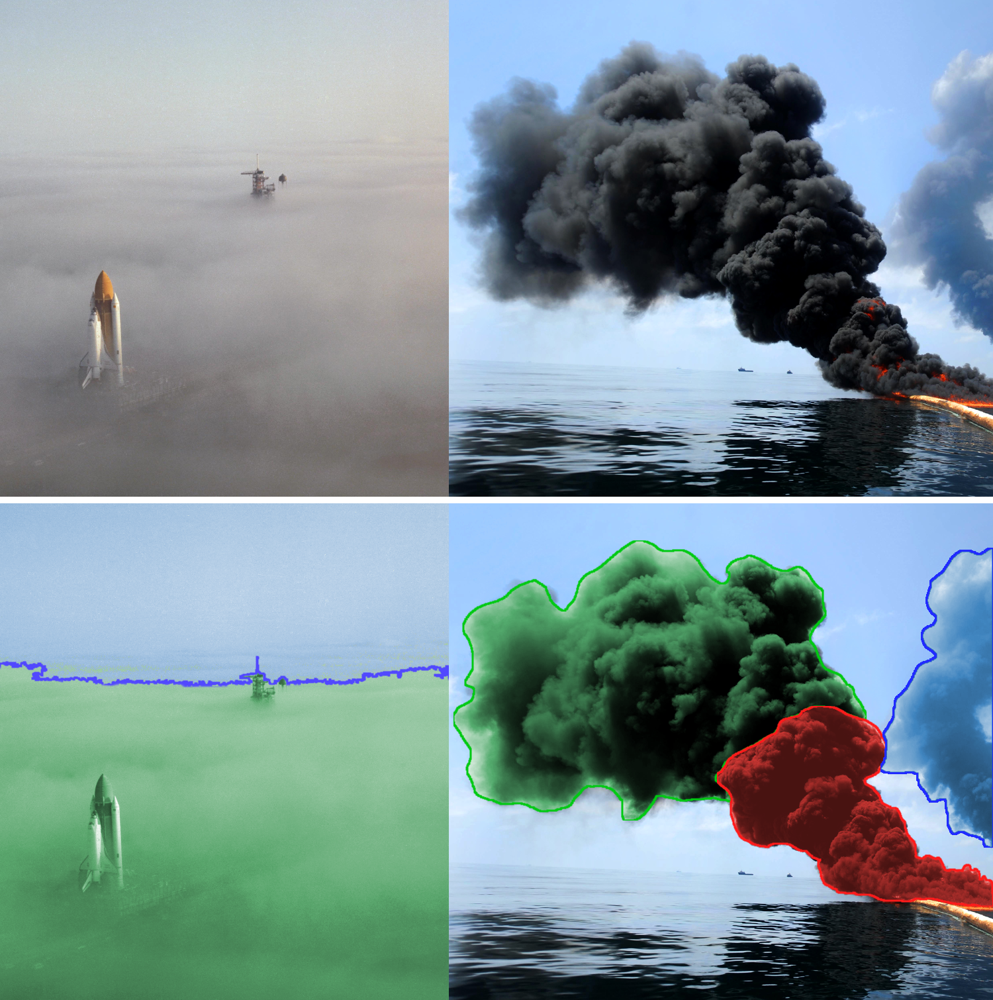Sources: https://commons.wikimedia.org/wiki/File:Space_Shuttle_Challenger_moving_through_fog.jpg and https://commons.wikimedia.org/wiki/File:Defense.gov_photo_essay_100506-N-6070S-819.jpg
{kind=link}
{kind=link}
To cover these individual frequencies I created an adaptive world space grid in my thesis. The subdivision of the adaptive grid can be seen in the following image. Each of the green cubes is a node in the grid which stores data inside a 3D texture atlas. The biggest difference to previous approaches is, that these frequencies are completely independent of each other and that the grid is in world space.
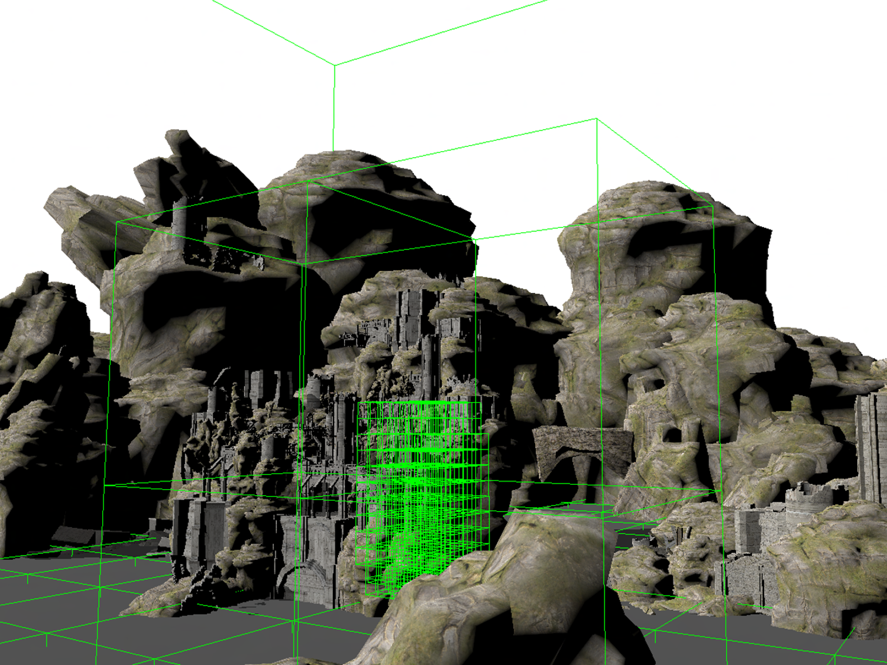For the thesis I implemented three different effects:
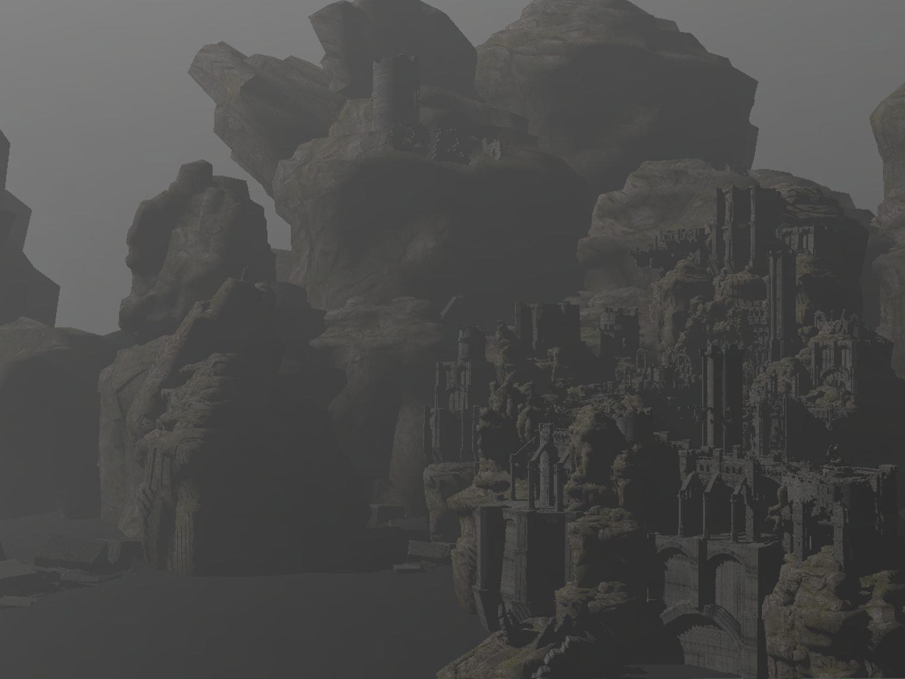Large scale homogeneous fog on the lowest frequency.
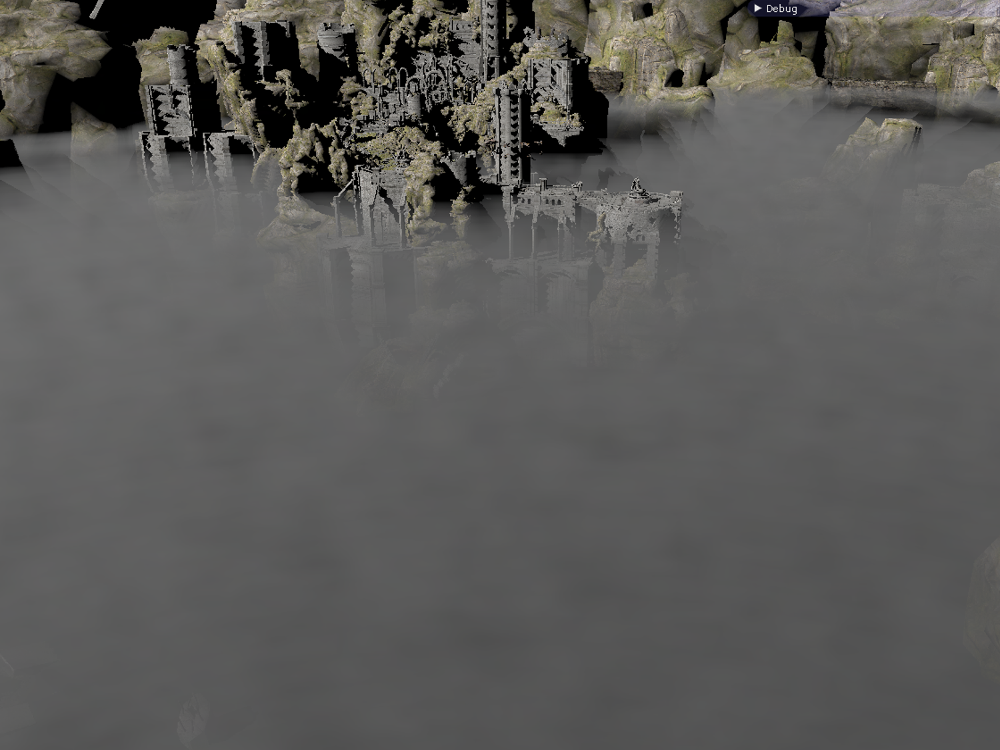Medium scale heterogeneous ground fog at the intersection between fog and air.
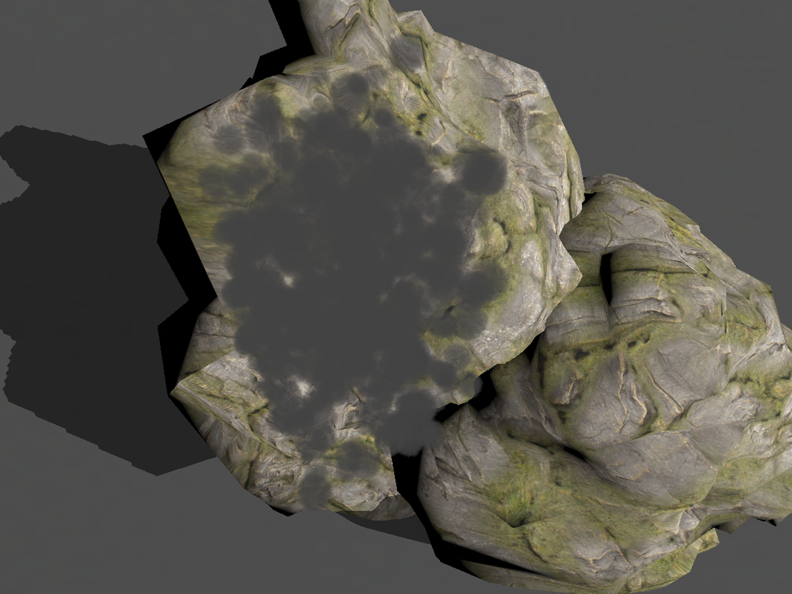Small scale high frequency particle spheres.
Grid Traversal
Similar to other raymarching approaches, an exponential distribution of raymarching steps is used. However, because the frequencies are independent of each other it is necessary to perform multiple samples for one raymarching steps. During the raymarching, shadowing through sampling of the shadow maps as well as the calculation of shadow rays for a directional light are performed. The results of this can be seen in the following image.
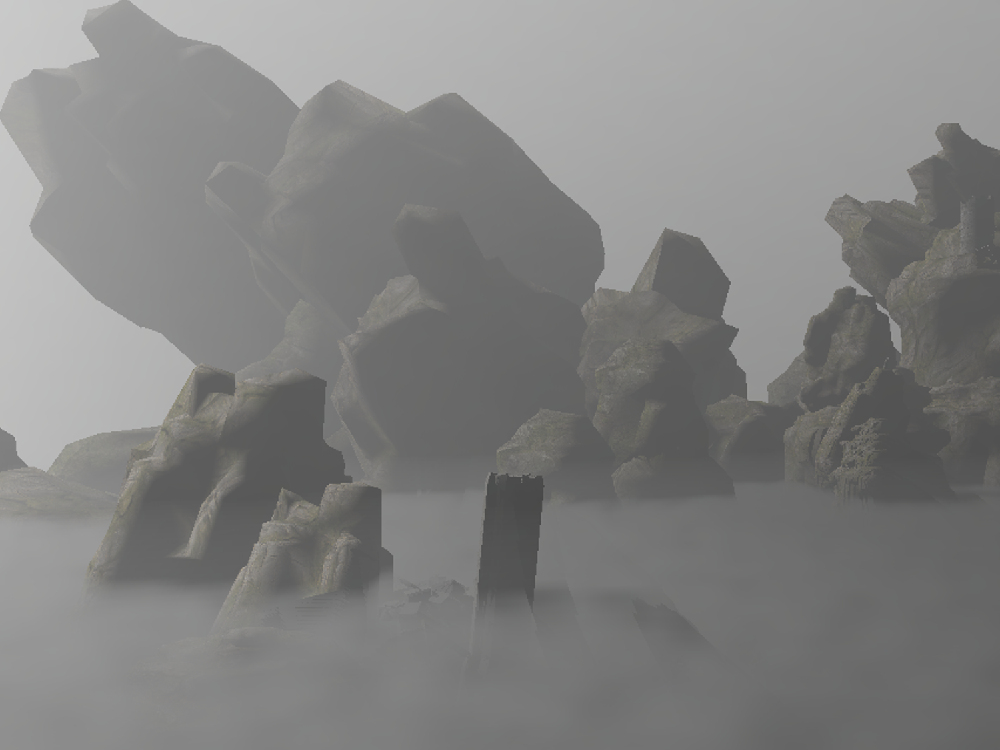In addition to this, a level of detail mechanism was implemented. For this, mipmaps are created for parent nodes which store the averaged values of the child nodes. To improve the transition between mipmaps and child levels they are blended for several steps until only the mipmap will be sampled.
Performance
As can be seen in the following graph the performance is currently not real time anymore for the worst case that at each ray position a shadow ray has to be casted. However, to put this into perspective the raymarching is currently performed with a far higher resolution than other approaches like Frostbite.
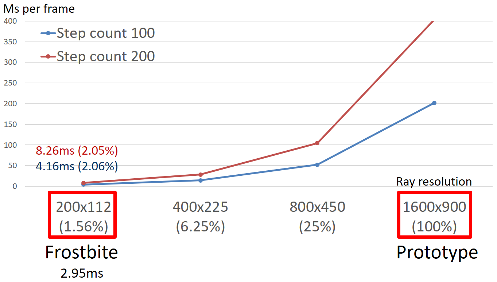The main reason for the worse performance are the shadow rays. This can be seen in the following visualization of shadow ray complexity and the comparison to the performance without the shadow rays.
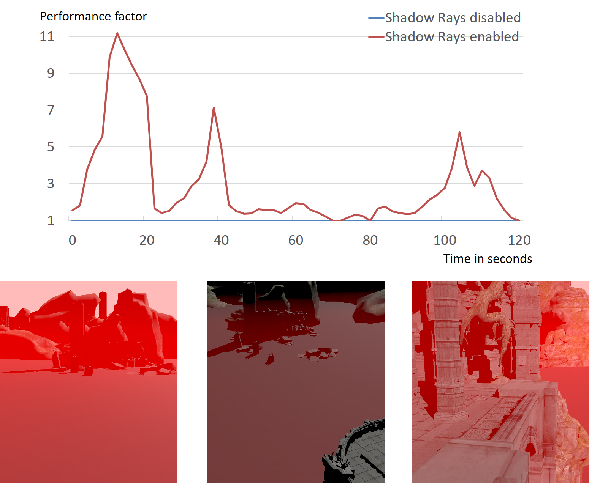Particle performance
One of the advantages of this approach is, that the adaptive grid can be used for different effects and offers a unified rendering approach. As can be seen from the following diagram large numbers of particles can be inserted into the grid. One advantage of this is also, that the update of the grid depends on the actual grid topology and not directly on the number of particles. This makes very dense particle systems possible.
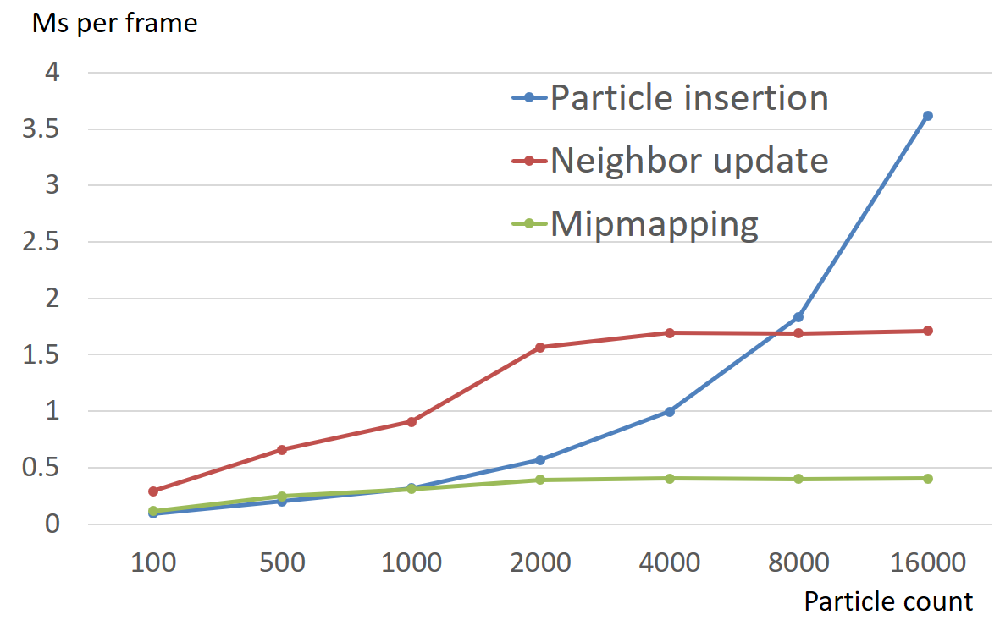Memory usage
As an example for a scene with ground fog and a large number of particles the overall memory usage is around 256 MB. This is mainly influenced by the 3D volume textures which have a side length of 17 texels in the current implementation. The distribution of memory can be seen in the following table:
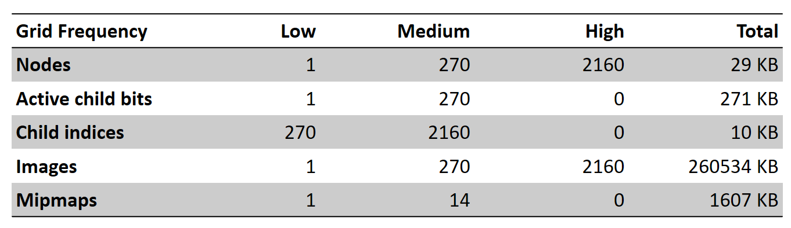Rendering Results
The results of the rendering were compared against the physically based offline raytracer from PBRT. An example for this with the exported ground fog can seen in the following image. On the left the results of the prototype can be seen and on the right the results of the offline raytracer. The raytracer was modified to only use single scattering similar to the prototype.
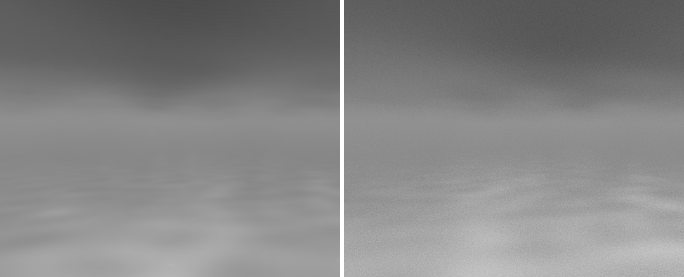Conclusion
The prototype showed several advantages in comparison to previous approaches:
- Independent frequencies: This reduces the complexity of grid updates and allows to update data on different frequencies independently.
- World space adaptive grid: Store data over multiple frames and allows casting of shadow rays in world space. However the grid traversal is more expensive than with uniform grids.
- Physically correct: Because of the world space grid we have support for calculation of volumetric shadows from directional light sources. This also improves the overall rendering making it possible to achieve similar results to offline raytracers.
- Large numbers of particles: The adaptive grid supports dens particle systems with high frequency data.
The main problem for the prototype of this approach is currently the performance. Because a far higher resolution is used in comparison to other approaches with all features enabled no real time performance can be achieved anymore. This is especially important for the costs of the shadow rays. In addition to this no temporal integration has been added yet which is very important to get a similar result from the rendering as other state of the art approaches.